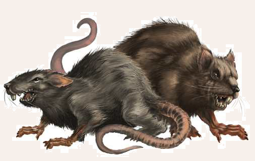

Ratten gelten in zwölfgöttlichen Landen als Unglücksbringer, als Sendboten und Diener des Namenlosen. Auch wenn es die eine oder andere friedliche Ratte geben mag, so ist der Anblick von Wolfsratten ein Grund mehr, die Geschichten über die Verbindung zwischen den Nagetieren und dem Gott ohne Namen zu glauben. Wolfsratten werden über einen halben Schritt lang, sind dunkel behaart und äußerst aggressiv. Die Heimat der Wolfsratte ist Nord- und Mittelaventurien. Sie kann ebenso in Tobrien angetroffen werden wie in Almada oder Aranien. Meist treibt sie sich in Ruinen, dem Wald oder der Kanalisation von Städten herum. Gelegentlich hört man Berichte, dass Wolfsratten sich zu riesigen Rudeln zusammengeschlossen und ganze Dörfer überfallen haben. In der Zeit des Sternenfalls geschieht dies regelmäßiger, und die Aventurier gewinnen auch zunehmend den Eindruck, dass sich die Wolfsrattenpopulation stetig vergrößert. Abenteurer können den gefräßigen Nagern unter vielen Tavernen, im Keller von Gebäuden oder im Wald begegnen. Anders als ihre Artgenossen greifen Wolfsratten auch an, bevor sie in die Enge getrieben wurden.

Wolfsratte
Größe: 0,40 bis 0,60 Schritt lang (ohne Schwanz); 0,70 bis 0,90 Schritt lang (mit Schwanz); 0,20 bis 0,25 Schritt hoch
Gewicht: 0,5 bis 1,5 Stein
Eigenschaften:
MU 10
KL 10
IN 14
CH 11
FF 11
GE 13
KO 06
KK 10
LeP: 5
AsP: -
KaP: -
INI: 12+1W3 (+Krankheit)
SK: 1
ZK: 2
GS: 6
VW: 7
Biss:
AT: 10
TP: 1W3 (+Krankheit)
RW: kurz
RS/BE: 0/0
Aktionen: 1
Vor- und Nachteile: Dunkelsicht II/ Angst vor Feuer II
Sonderfertigkeiten: Angriff auf ungeschützte Stellen (Biss; Rüstungsschutz, der durch Kleidung und Rüstungen zustande gekommen ist, kann ignoriert werden,
wenn die AT der Wolfsratte gelingt und die Verteidigung des Ziels misslingt. Magischer oder natürlicher Rüstungsschutz kann nicht umgangen werden und schützt weiterhin, auch wenn man mit der Sonderfertigkeit den zusätzlichen externen RS
umgehen kann. Die Attacke ist um 2 erschwert.)
Talente:
Klettern 10 (10/13/10),
Körperbeherrschung 4 (13/13/6),
Kraftakt 2 (6/10/10),
Schwimmen 6 (13/6/10),
Selbstbeherrschung 4 (10/10/6),
Sinnesschärfe 10 (10/14/14),
Verbergen 7 (10/14/13),
Einschüchtern 2 (10/14/11),
Willenskraft 2 (10/14/11)
Anzahl: 1 oder 2W6+6 (Rattennest) oder 3W20+100 (Riesenrudel)
Größenkategorie: winzig
Typus: Tier, nicht humanoid
Kampfverhalten: Wolfsratten attackieren Menschen gelegentlich aus dem Hinterhalt und versuchen, ungeschützte Stellen anzugreifen.
Flucht: Verlust von 50% der Lebenspunkte
Beute: 1 Ration (zäh)
Jagd: -1
Sonderregeln: Krankheit: Wolfsratten können Krankheiten übertragen.
Für je volle 10 SP durch sie wird mit 1W20 gewürfelt: 1-16 (keine Krankheit), 17 (Lutanas), 18 (Sumpfieber), 19-20 (Tollwut)
Panik vor Feuer: Wenn die Wolfsratte mit einer größeren Menge von Feuer konfrontiert wird (etwa Fackelgröße), flieht sie bei 1-3 auf dem W6
Meute: Wolfsratten, die gemeinsam einen Gegner angreifen, erhalten pro Ratte in der Überzahl +1 AT (bis zu einem Maximum von +4 AT).
| LeP-Verlust | Schmerz | |
|---|---|---|
| 4 LeP (¾) | +1 Schmerz | |
| 3 LeP (½) | +1 Schmerz | |
| 2 LeP (¼) | +1 Schmerz | |
| 1 LeP und weniger | +1 Schmerz |
| Tierkunde | (Wildtiere) | |
|---|---|---|
| QS1 | Es sind Tiere des Namenlosen. | |
| QS2 | Sie ziehen sich bei Feuer meistens zurück. | |
| QS3 | Wolfsratten übertragen Krankheiten. |